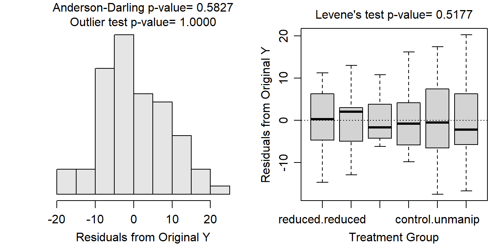
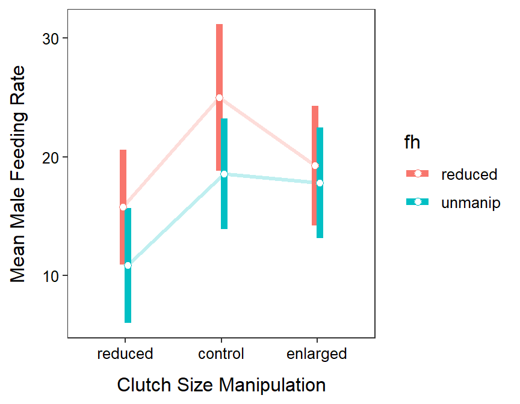

This study is not at all balanced as many different sample sizes were in each treatment. It is not clear why this is the case, though I suspect some things went “wrong” in some of the treatments as most sample sizes are near 14 except for the control clutch size and reduce forehead patch size group.
We really need more information to fully assess independence in this case. However, the author randomly assigned clutch size and forehead manipulations, so the individuals are likely dependent enough. A lack of dependency could come from the nests being in close proximity to each other such that the activities of one male bird would affect the others. There is, however, no evidence to either support or refute this.
The variances appear to be equal (Levene’s p=0.5177) and the boxplots of residuals are fairly similar; the residuals do appear to be approximately normally distributed (p=0.5827); and there are no significant outliers (outlier test p>1). The assumptions appear to be met on the original scale and thus will not be transformed.
There does not appear to be a significant interaction effect (p=0.6072). There does however appear to be main effects for both the clutch size manipulation (p=0.0111) and forehead patch size manipulation (p=0.0499) factors.
The mean male feeding rate was between 2.10 and 14.22 units lower for the reduced clutch size than the control clutch size (p=0.0054). The mean male feeding rate for the enlarged clutch size did not differ significantly from the control (p=0.4994) or reduced (p=0.0774) clutch sizes. The mean male feeding rate was between 0.03 and 8.19 greater for the reduced forehead flycatchers than those with unmanipulated foreheads (p=0.0482).
Sanz’s hypotheses were generally supported. The mean feeding rate of the males was supported when brood demand (i.e., clutch) size increased from the reduced to the control treatments, but not from the control to enlarge treatments and also not statistically from the reduced to enlarged treatments. Thus, there may be a threshold clutch size above which mean feeding rate of males does not increase. There is some evidence as well to support the hypothesis that mean feeding rate of males increased as attractiveness decreased (i.e., as the forehead patch size was reduced).
> pf <- read.csv("http://derekogle.com/NCMTH207/modules/ce/data/PiedFlycatcher.csv")
> pf$csm <- factor(pf$csm,levels=c("reduced","control","enlarged"))
> lm1.pf <- lm(mfr~csm+fh+csm:fh,data=pf)
> xtabs(~csm+fh,data=pf) fh
csm reduced unmanip
reduced 13 13
control 8 14
enlarged 12 14> assumptionCheck(lm1.pf)
> anova(lm1.pf)Analysis of Variance Table
Response: mfr
Df Sum Sq Mean Sq F value Pr(>F)
csm 2 735.6 367.79 4.8077 0.01114
fh 1 304.9 304.89 3.9854 0.04990
csm:fh 2 76.9 38.45 0.5026 0.60720
Residuals 68 5202.0 76.50 > lm1.pf.noint <- lm(mfr~csm+fh,data=pf)
> mc1.pf.csm <- emmeans(lm1.pf.noint,specs=pairwise~csm)
> ( mc1sum.pf.csm <- summary(mc1.pf.csm,infer=TRUE) )$emmeans
csm emmean SE df lower.CL upper.CL t.ratio p.value
reduced 13.3 1.70 70 9.91 16.7 7.814 <.0001
control 21.5 1.87 70 17.74 25.2 11.467 <.0001
enlarged 18.6 1.70 70 15.22 22.0 10.921 <.0001
Results are averaged over the levels of: fh
Confidence level used: 0.95
$contrasts
contrast estimate SE df lower.CL upper.CL t.ratio p.value
reduced - control -8.16 2.53 70 -14.22 -2.101 -3.225 0.0054
reduced - enlarged -5.31 2.41 70 -11.08 0.459 -2.204 0.0774
control - enlarged 2.85 2.52 70 -3.19 8.893 1.129 0.4994
Results are averaged over the levels of: fh
Confidence level used: 0.95
Conf-level adjustment: tukey method for comparing a family of 3 estimates
P value adjustment: tukey method for comparing a family of 3 estimates > mc1.pf.fh <- emmeans(lm1.pf.noint,specs=pairwise~fh)
> ( mc1sum.pf.fh <- summary(mc1.pf.fh,infer=TRUE) )$emmeans
fh emmean SE df lower.CL upper.CL t.ratio p.value
reduced 19.9 1.53 70 16.8 22.9 13.014 <.0001
unmanip 15.7 1.36 70 13.0 18.4 11.605 <.0001
Results are averaged over the levels of: csm
Confidence level used: 0.95
$contrasts
contrast estimate SE df lower.CL upper.CL t.ratio p.value
reduced - unmanip 4.11 2.04 70 0.0332 8.19 2.011 0.0482
Results are averaged over the levels of: csm
Confidence level used: 0.95 > mc1.pf <- emmeans(lm1.pf,specs=pairwise~csm:fh)
> ( mc1sum.pf <- summary(mc1.pf,infer=TRUE) )$emmeans
csm fh emmean SE df lower.CL upper.CL t.ratio p.value
reduced reduced 15.8 2.43 68 10.93 20.6 6.501 <.0001
control reduced 25.0 3.09 68 18.83 31.2 8.084 <.0001
enlarged reduced 19.2 2.52 68 14.21 24.3 7.624 <.0001
reduced unmanip 10.8 2.43 68 6.01 15.7 4.471 <.0001
control unmanip 18.6 2.34 68 13.91 23.2 7.945 <.0001
enlarged unmanip 17.8 2.34 68 13.12 22.5 7.609 <.0001
Confidence level used: 0.95
$contrasts
contrast estimate SE df lower.CL upper.CL t.ratio p.value
reduced reduced - control reduced -9.231 3.93 68 -20.76 2.29 -2.349 0.1895
reduced reduced - enlarged reduced -3.481 3.50 68 -13.75 6.79 -0.994 0.9183
reduced reduced - reduced unmanip 4.923 3.43 68 -5.14 14.98 1.435 0.7058
reduced reduced - control unmanip -2.802 3.37 68 -12.68 7.08 -0.832 0.9605
reduced reduced - enlarged unmanip -2.016 3.37 68 -11.90 7.86 -0.599 0.9908
control reduced - enlarged reduced 5.750 3.99 68 -5.96 17.46 1.440 0.7025
control reduced - reduced unmanip 14.154 3.93 68 2.63 25.68 3.601 0.0076
control reduced - control unmanip 6.429 3.88 68 -4.94 17.80 1.658 0.5636
control reduced - enlarged unmanip 7.214 3.88 68 -4.15 18.58 1.861 0.4347
enlarged reduced - reduced unmanip 8.404 3.50 68 -1.86 18.67 2.400 0.1708
enlarged reduced - control unmanip 0.679 3.44 68 -9.41 10.77 0.197 1.0000
enlarged reduced - enlarged unmanip 1.464 3.44 68 -8.63 11.55 0.426 0.9981
reduced unmanip - control unmanip -7.725 3.37 68 -17.60 2.15 -2.293 0.2111
reduced unmanip - enlarged unmanip -6.940 3.37 68 -16.82 2.94 -2.060 0.3205
control unmanip - enlarged unmanip 0.786 3.31 68 -8.91 10.48 0.238 0.9999
Confidence level used: 0.95
Conf-level adjustment: tukey method for comparing a family of 6 estimates
P value adjustment: tukey method for comparing a family of 6 estimates > pd <- position_dodge(width=0.1)
> ggplot(data=mc1sum.pf$emmeans,
mapping=aes(x=csm,group=fh,color=fh,
y=emmean,ymin=lower.CL,ymax=upper.CL)) +
geom_line(position=pd,size=1.1,alpha=0.25) +
geom_errorbar(position=pd,size=2,width=0) +
geom_point(position=pd,size=2,pch=21,fill="white") +
labs(y="Male Feeding Rate",x="Clutch Size Manipulation") +
theme_NCStats()